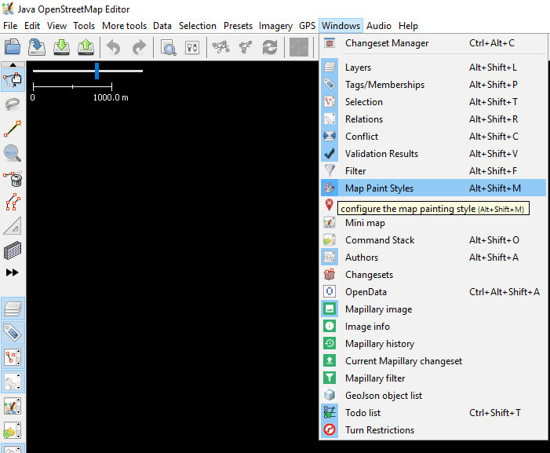

Introduction to Java OpenStreetMap (JOSM)
Download page as PDFObjectives:
- Understand how to download JOSM installation file
- Able to install JOSM
- Able to change JOSM settings
- Understand JOSM interface
Java OpenStreetMap (JOSM) is a OpenStreetMap desktop-based editor. JOSM allows you to edit the mapping data in offline mode for some time, so you don’t always need to connect to the internet. It will certainly make it easier for everyone who works within limited internet connections. You only need an internet connection when downloading data from OpenStreetMap and when uploading data to OpenStreetMap server. In addition, this module will also learn how to change some settings in JOSM so that later you can use it. You will also learn and understand the parts of the interface in JOSM. By understanding the part of JOSM, at the end of this module you will get an understanding and some basic settings in JOSM.
I. Download JOSM
If you have a copy of JOSM installation file on CD or flashdisk, you can go to next sub-module that is Installing JOSM. But if you don’t have JOSM installation or if you want to have the latest version of JOSM, please open your web browser (you can use Firefox, Chrome, Opera, or Internet Explorer). In the address column at the top of the window, then type josm.openstreetmap.de then press enter. You can also find the JOSM site by typing the search word “JOSM” on the search engine. The JOSM website will look like below.

JOSM site
Please choose the installation file based on your computer’s operating system. If you are using a computer with operating Windows system operation, click Windows JOSM Installer to download JOSM. If you have another operating system, click on the link that matches your computer’s operating system. Then you can download it. In this module we will assume you are using Windows, but the instructions are almost the same as other operating systems.
II. Installing JOSM
After you successfully download JOSM, now you will install JOSM on your computer or laptop. Here are the steps:
- Find JOSM installation file on your computer. Double-click on the file to start the installation. Then a window will appear “Do you want to allow this app from an unknown publisher to make changes to your device?”, then click Yes.
- Then a window will appear to choose the language. This module will only discuss JOSM in English. If the language has been selected, please click OK.

Installer language
- The next window will appear about the JOSM Setup Wizard. Click Next.
JOSM Setup Wizard
- License Agreement window will appear. Click I Agree.
License Agreement window
- The window will appear Choose Components. Here you can choose whatever part of the JOSM you want to install. Then click Next.

Choose components window
- Next, the window will appear Choose Install Location. Here you can choose the folder where you want to install JOSM. Then click Install.

Choose install location window
- When the installation is complete, click Finish to open JOSM for the first time. Then, when you want to start JOSM, you can do this by clicking on the Start Menu in the lower left corner of your computer, and clicking the JOSM program.
- When JOSM opens, it will look like this:

JOSM display
Note: You may have problems installing JOSM if Java is not already installed on your computer. If you have problems when installing in this section, try downloading and installing Java. You candownloadit here: http://www.java.com/en/download/ You may see a window appear when you open JOSM, asking to update the software. You don’t need to update it because the one you just downloaded is new software. Press the “Cancel” button. If you don’t want to see this message again, check the box below before pressing “Cancel”. JOSM in this module is version 14760. The display may be different if you use another version of JOSM. JOSM yang digunakan dalam modul ini versi 14760. Tampilan mungkin berbeda jika Anda menggunakan JOSM versi yang lain.
III. Changing Setting in JOSM
a. Changing Languages
There are so many setting that you can change in JOSM. One of them is the language. JOSM has been translated into various languages, and you can choose the language you want. There are the steps to change the language in JOSM:
- Go to Preferences, click Edit → Preferences.

Preferences icon in JOSM
- On the left side, click Display Setting icon that looks like a can and paint brush.

Display setting icon
- At the top of the window, click the tab that says Look and Feel.
- Select the language you want in the list of choices that says Language. Click OK and then restart to change your JOSM language.

Display setting for change language
b. Setting Account
After changing the language, you must enter your OSM account name and password in JOSM. The aim is when you edit or add data on OSM map, the server will know that the edit was made by you. If you do not enter an account name, you can not upload the data that you have edited or added to the OSM map. There are the steps to enter your OSM account in JOSM:
- Go to Preferences window, click Edit → Preferences.

Preferences icon in JOSM
- On the left side, click Connection Setting icon that looks like a globe.

Icon connection setting
- Select Authentication → Use Basic Autentication.
- Enter your OSM account name and password.

Connection setting for enter you OSM account
- Click OK and restart your JOSM.
c. Adding Preset
Now you have entered your OSM account. Next is setting to put preset in JOSM. Preset are files that can provide information about objects that you mapped on OpenStreetMap. For more detailed explanation of preset and how to make preset, you can see them in Creating OpenStreetMap Preset module. There are the steps to put preset in JOSM:
- Go to Preferences window, click Edit → Preferences.

Preferences icon in JOSM
- On the left side, click Map Settings icon that looks like a grid or boxes.

Map Setting icon
- Under Available Preset box search and select the preset named HOT PDC InAWARE Indonesian Project. Then click the blue arrow located to the right of the box.
Add Preset
If you have your own file presets in your computer, you can add it by:
- Please click + sign next to the box active presets.
Plus (+) sign to add preset from computer
- Then click Open a File to search your presets file.

Open a File icon
- Click Open and then OK.
d. Adding Satellite Imagery
You will use satellite imagery when editing OSM maps. If your internet connection is stable when you open JOSM setting, then in section Edit → Preferences → Imagery Preferences, satellite images that are often used will automatically selected. If the internet connection has a trouble and when you see the imagery preferences section, there is no satellite image selected. You can try to restart JOSM and look again at imagery preferences section whether the satellite image has been selected or not. If still not selected, there are the steps to add imagery satellite in JOSM:
- Go to Preferences window, click Edit → Preferences.

Preferences icon in JOSM
- On the left side, click Imagery Preferences icon or that reads WMS TMS.

Imagery preferences icon
- Then click the satellite image that you want to choose (for example Bing, Digital Globe, Mapbox, and Esri) in Available default entries box.
- Then click Activate button under Available default entries box.

Activate button
- Then you will see satellite imagery that you have previously selected already in Selected Entries box as shown below. Then click OK and JOSM will request to restart.

Selected satellite imagery
e. Set Display Image of the Object
In the initial settings in JOSM, each OpenStreetMap object in JOSM does not show the points, labels, and icons like a picture shown below.

JOSM display example
To show the points, labels, and icons, you should change the map style in your JOSM. there are the steps:
- Click File → New Layer to bring up the windowl in JOSM.
- On the right side of the JOSM window, look at Map Paint Styles box.
- If there is no Map Paint Styles window in your JOSM, please click Windows menu on the top of your JOSM, then click Map Paint Styles to activate the Map Paint Styles window.

To activate Map Paint Styles
- After click, map paint styles window will shown on the right side of your JOSM.
- Right click on JOSM default (Map CSS) and choose Style Settings.
- Match it with the view below.

Map Paint Styles setting in JOSM
If you already set all settings like steps before, the display of your JOSM image will show the points, labels, and icons for object in OpenStreetMap like the picture below:

JOSM display after settings changed
IV. JOSM Interface
Now you have set some settings in JOSM. To make it easier for you to do editing, you need to look at some important parts of JOSM. To see JOSM interface, click on the menu File → New Layer. There are some parts on the interface in JOSM.
Parts of JOSM interface
In JOSM there are mapping area, toolbars, and windows. Mapping area is for view, edit, and add data OpenStreetMap. On the right side of JOSM, there is a series of window that have specific functions. Usually the first time you install JOSM, several windows will shown with default setting, such as Layers, Selections, Tags / Memberships, and Author.
- Layers window will show any layers that added to JOSM, such as satellite imagery, downloads OSM data, and so on.
- When you select an object, either a point, line, or polygon in the map area, it will be shown on selections window.
- Information about objects that will be shown in Tags / Memberships window.
- The name of the object creator will be shown in author window.
If you want to remove some windows, you can click the x in the right corner of the window you want to remove. If you want to add another window, you can activate it in Windows menu and once activated it will appear in windows on the right side of JOSM.
The left side toolbar on JOSM is window tools that contains several buttons for editing, such as Select object and Draw nodes button. Underneath are tools for zoom and move map, delete nodes or way, and create areas. For other toolbar, you can click the two right black arrow button. Then click the tool that you want and it will appear on the toolbar.

Two right black arrow button on JOSM
SUMMARY
If you able to follow and practice all the steps in this module, you have successfully installed JOSM on your laptop or computer. In addition, you have also succeeded in learning and practicing how to do standard settings in JOSM to facilitate your work. In the next module you will learn how to add data in JOSM from beginner to advanced levels.